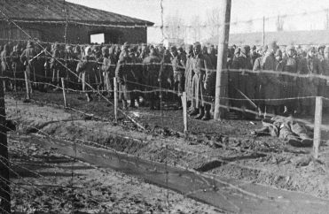
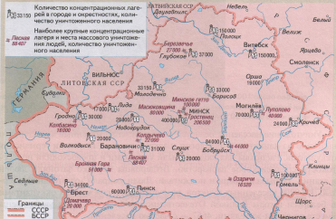
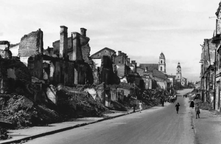
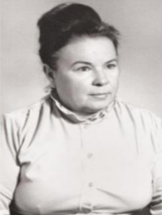
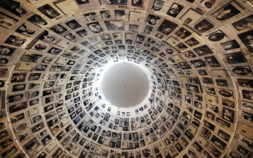

Великая
Отечественная Война
Мы - патриоты нашей страны
Мы - патриоты нашей страны
Великая Отечественная война стала самым трагическим событием в истории Беларуси. Она унесла жизни каждого третьего белоруса. Политику осознанного геноцида на нашей земле нацисты начали осуществлять уже с первых дней войны. Это карательные операции и тысячи сожженных деревень, лагеря смерти, гетто и другие места принудительного содержания, показательные казни и устрашающие виселицы в городах. Все это пришло в Беларусь 22 июня 1941 года...
Геноцид (от греч. γένος - род, племя и лат. caedo - убиваю) - форма массового насилия, которую ООН определяет как действия, совершаемые с намерением уничтожить, полностью или частично, какую-либо национальную, этническую, расовую или религиозную группу как таковую.
Во время Великой Отечественной войны геноцид со стороны фашистских оккупантов не ограничивался массовым убийством белорусского населения. Политика нацистской Германии по ликвидации белорусского народа предполагала и создание концлагерей с нечеловеческими условиями содержания, и применение всевозможных пыток, и насильственный вывоз гражданского населения БССР в Германию для принудительного труда, и еще целый ряд зверских «мероприятий» по уничтожению мирного населения и имущества.
История не знает ни одного подобного факта, когда геноцид осуществлялся в таких масштабах и с таким ожесточением. В сентябре 1941 г., когда вся территория Беларуси была захвачена, в оккупации немецко-фашистских войск оказалось более 7 миллионов ее жителей. Массовое уничтожение людей было поставлено на поток.
На территории Беларуси были организованы свыше 260 лагерей смерти. Только в Тростенце под Минском по имеющимся в Генеральной прокуратуре Республики Беларусь сведениям было убито и замучено не менее 546 000 человек. Крупные лагеря смерти насчитывались в каждой области, в которых провели свои последние минуты жизни десятки тысяч военнопленных и мирных жителей.
Практически одновременно с приходом немецких войск на территории Беларуси, главным образом в ее восточной части, начались массовые убийства евреев. Во всех населенных пунктах, где проживали евреи, гитлеровцами были созданы около 70 еврейских гетто. Уже к концу 1941 года в 35 самых крупных гетто все евреи были убиты.
Лагерь смерти “Тростенец” под Минском
По официальным данным, в годы Великой отечественной войны узниками детских концлагерей стали более 35 тыс. только белорусских детей. На территории Беларуси в Красном Береге находится единственный в СНГ мемориал «Детям – жертвам войны». В 1942 году нацисты организовали здесь сборный пункт для отбора детей в возрасте от 8 до 14 лет. На детях отрабатывались новые хирургические приёмы, проводились граничащие с садистскими операции без наркоза. Многим ребятишкам была уготована страшная участь доноров крови для немецких солдат и офицеров. Доноров до последней капли... В застенках детского лагеря смерти Красный Берег оборвалась жизнь 1990 детей. Всего же на территории Беларуси было создано 14 детских концлагерей или детских сел.
Наиболее крупные концлагеря на территории Беларуси
В целях так называемых «усмирительных» акций нацистскими военными преступниками и их пособниками было сожжено, разрушено и разграблено свыше 200 белорусских городов и районных центров. Частично или полностью было сожжено более 9 000 сел и деревень, 628 среди которых разделили участь Хатыни, дотла уничтоженной вместе со всеми проживавшими там людьми.
Не меньшую жестокость проявляли и различные батальоны из числа украинских, польских, литовских, латвийских, эстонских и других националистических формирований. Только одним 12-м литовским батальоном к моменту освобождения Беларуси было уничтожено около 60% населения одного только Освейского района Витебской области.
С варварской жестокостью нацисты уничтожали промышленность, культурные и научные ценности белорусского народа. За годы оккупации было уничтожено 85% довоенных заводов и фабрик, в Германию было вывезено 90 % станочного и технического оборудования. Разрушались тысячи учебных и культурных заведений. Общий материальный ущерб, причиненный фашистскими оккупантами, в современных ценах составлял бы около 150 миллиардов долларов.
Но как оценить бесценные человеческие жизни всех тех, кто навечно остался в страшных лагерях и гетто, застыл в немом крике адского пламени карательных костров, погиб за свободу в партизанских лесах, попал в мясорубку военной машины на полях сражений? Благодаря сохранившимся архивным документам установлено, что в годы нацистской оккупации на территории Беларуси было убито
не менее 3 000 000 мирных граждан или каждый третий житель Беларуси, в том числе и дети, более 380 000 человек было угнано в немецкое рабство, замучено в лагерях около 800 000 военнопленных.
Никогда больше! На одном из памятников Хатыни высечена надпись: «Мы сгорели живыми в огне. Наша просьба ко всем: пусть скорбь и печаль обратятся в мужество ваше и силу, чтобы смогли вы утвердить навечно мир и покой на Земле». Эти слова обращены к нам и нашим детям.
Трагедия еврейского народа в годы Великой Отечественной войны вошла в еврейскую историографию словами Холокост, Катастрофа или Шоа (геноцид).«Геноцид – это истребление отдельных групп населения по расовым, национальным или религиозным мотивам, одно из тягчайших преступлений против человечества»
С первых дней войны на оккупированной территории Беларуси фашисты начали создавать в городах и местечках гетто – изолированные части города, «отведённые для принудительного поселения людей по расовым, профессиональным, религиозным и др. признакам». В меморандуме А. Розенберга «Указания к разрешению еврейского вопроса» подчеркивалось, что «первой основной целью немецких мер, проводимых в этом вопросе, должно быть строжайшее отделение евреев от остального населения. ...Все права на свободу должны быть отняты у евреев, они должны помещаться в гетто».
С созданием гетто расистская теория стала реальностью: евреи, которым нацистская концепция не отводила места в человеческом обществе, действительно были от него изолированы.
Первые гетто в Беларуси появились в конце июля - начале августа 1941 г. Всего на территории Республики по оценкам исследователей это число определяется по-разному: от 70 до 250 гетто. Иоффе Э.Г. в своей работе «Страницы истории евреев Беларуси» выделяет 153 населенных пункта Беларуси, на территории которых насчитывалось 163 гетто , учебное пособие «Великая Отечественная война советского народа», изданное в 2005 г., зафиксировало цифру более чем 110 гетто, а по подсчетам Е. С. Розенблата, только в Западной Беларуси было организовано 211 гетто. Такие расхождения в цифрах, определяющих количество гетто на территории Беларуси, связаны с отсутствием четкого определения слова «гетто». Самые большие цифры даются в работах израильских исследователей, где к гетто приравниваются различные населенные пункты и концлагеря, в которых находились евреи.
На территории генерального округа «Белоруссия» (рейхскомиссариат «Остланд») распоряжением полевого коменданта от 19 июля 1941 г., одним из первых было создано гетто в Минске - самое крупное по численности (около 100 000 узников), которое просуществовало более 27 месяцев , поэтому большинство свидетельских показаний связано именно с этим гетто.
Созданием гетто занимались военные комендатуры, службы полиции безопасности и СД, айнзатцгруппы. Их деятельность была организована по определенному шаблону: по вступлении в какой-нибудь город или местечко они сразу же устанавливали с помощью местных жителей имена раввинов и наиболее известных членов еврейской общины и требовали от них собрать все еврейское население для регистрации и отправки в "еврейский район". В приказе по кавалерийской бригаде СС № 8 от 28 сентября 1941 г. отмечалось, что создание гетто возможно тогда, если нет возможности ликвидировать евреев сразу.
В западных районах Беларуси (рейх-комиссариат «Украина») формально гетто не создавалось, но еврейское население (после регистрации и соответствующего обозначения, а также создания еврейских советов) фактически было лишено свободы передвижения. Оно интенсивно использовалось на принудительных работах, подвергалось коллективным контрибуциям. Такая ситуация сохранялась (за некоторым исключением) до конца 1941- начала 1942 гг., когда план и темпы «окончательного решения» еще находилась в стадии обсуждения.
После организации гетто еврейские кварталы превратились в зону повышенной эпидемиологической опасности, ситуацию усугубляла большая скученность населения, грязь, нищета. Изнурительный физический труд создавал непосредственную угрозу не просто здоровью, но и жизни обитателей гетто. В первые месяцы (особенно зимой) на оккупированной территории смертность узников была чрезвычайно высокой, вспыхнули эпидемии.
В г. Гродно, по оценкам оккупационных властей, медико-санитарная ситуация неоднократно была на грани критической. В августе 1942 г. в обоих гетто началась эпидемия дизентерии. В начале января 1943 г. в гетто г. Гродно вспыхнула эпидемия брюшного тифа: с 3 по 9 января было зарегистрировано 52 случая заболевания, с 10 января по 21 февраля – ещё 32 случая Холодной зимой 1941-1942 гг. одной из главных проблем было топливо. Люди разбирали внутренние заборы и хозяйственные постройки, топили книгами. Жители Минского гетто использовали в качестве топлива разрушенные дома, заборы, выкорчеванные пни.
В 2013 году умер единственный проживавший в Гродно оставшийся в живых бывший узник гродненского гетто Григорий НиселевичХосид. Он родился в городе Гродно в 1924 году 27 декабря.
Из воспоминаний Г.Н. Хосида:"Отец мой работал токарем по дереву, мама была домохозяйкой. На нынешней улице Кирова располагалась еврейская школа под названием «Тарбут», что в переводе означает культура. Обучение проходило на иврите. Здесь я проучился четыре года. Польский язык, историю и географию преподавали на польском языке. Затем было два года учёбы в школе по нынешней улице Социалистической и четыре года в другом месте. В 1939 году с приходом Советской власти школа стала еврейской, а позже получила номер седьмой. Все предметы в ней преподавали на идиш. Все ученики и преподаватели были евреи. Вскоре пошли слухи о переводе обучения на русский язык. Ученики проголосовали за идиш, но школу сделали русской. К нам в класс прислали русскую девочку. Мы её очень любили и оберегали. Учился я хорошо, был отличником. 23 июня 1941 года немцы вошли в Гродно. В город вошли армейские части Вермахта. Ещё не было гетто. Лучшие дома у евреев немцы отобрали. Остальные жили пока в своих домах. Согласно новым немецким порядкам, евреи не имели права ходить по тротуару, идти разрешалось только по мостовой и не вдвоём, а по одному, один за другим. Перед каждым немцем требовалось снимать шапку, за неповиновение били нагайкой и даже расстреливали. Евреям запрещалось ходить в магазин, на рынок, в парки, в кино. Немцы заставили всех сдать фотоаппараты, радиоприёмники. В 8 часов утра еврейскому населению с 17 до 60 лет необходимо было быть на сборном пункте и ждать работу. Вначале людей собирали во дворе большой синагоги, а затем - в районе нынешнего автовокзала. Заставляли чистить улицы, разбирать дома, грузить. За работу ничего не платили и не кормили. Иногда что-то перепадало с кухни в зависимости от того, где работал. В районе нынешней улицы Тельмана была воинская часть. Во дворе находился бассейн. Немцы заставляли людей купаться в грязной воде и тереть спины кусками битого кирпича. Если на теле не было крови - били нагайкой. Однажды в районе Румлёва после работы загнали работавших в воду и держали там до тех пор, пока люди не стали тонуть. Несколько дней пришлось мне работать на железной дороге. Грузили тяжёлые ящики без ручек. Немцы требовали, чтоб с ящиками бежали. Гетто в Гродно началось 1 ноября 1941 года. Всех евреев приказом согнали туда. Было создано два гетто. Одно для рабочих специальностей, второе - для всех остальных. Первое гетто располагалось от начала большой синагоги до речки по улице Виленской, второе - от современного автовокзала до улицы Белуша. Теснота была страшная. Я долго искал себе место и нашёл его в подвале дома, где уже проживало несколько семей. Мне ещё не было 17 лет, и я мог не ходить на работу, но ходил. Нужно было спасаться от голода и холода. Вместе с тем от голода в гетто если и умирали, то немногие. Дело в том, что фашисты включили Гродно в состав третьего Рейха, и гродненцам, по сравнению с другими евреями, оставалось жить относительно дольше. Руководство еврейской общины добилось от немцев, что из-за тесноты часть людей может перейти в гетто № 2. Там у нас уже была небольшая комнатка на четырёх человек: я, отец, мать и старшая сестра Ноймеле. Дедушка со стороны мамы с семьёй сына остались в гетто № 1. Второй мой дедушка со стороны отца погиб в 1919 году. В ноябре 1942 года немцы объявили о том, что евреев из Гродно будут отправлять в рабочие лагеря. На самом деле это был один из очередных обманов: Людей вывозили в лагеря для уничтожения. Самый ближний лагерь - Треблинка находился всего в 150-160 км от Гродно. Депортация происходила постепенно, и нашей семье удалось удержаться вместе до февраля 1943 года. 13 февраля немцы потребовали выйти на работу. На сборном пункте нас окружили и загнали в большую синагогу. Кое-кто пытался бежать, их расстреляли. Около 2000 узников посадили в вагоны и повезли в концентрационный лагерь Треблинка. Моему отцу в то время было 53 года, и он благословил меня на побег. Вагон оказался пассажирским. Всех, кто пытался выпрыгнуть из него, немцы застрелили. Я рискнул. Когда поезд стал двигаться с наибольшей скоростью, я прыгнул. Немцы заметили меня уже на земле. Они начали стрелять, но промахнулись, и поезд на большой скорости умчался дальше.
Была зима.Обувь моя разлетелась, одежда стала как ледяной панцирь. Я бежал подальше от железной дороги, которая охранялась. После прохождения поля я попал на замерзший пруд. Лед не выдержал, и я оказался в воде с головой. Еле выбрался, продолжал бежать. Пытался согреться в одной из хат, жители которой покормили меня, но остаться и отдохнуть я не мог, они боялись меня оставить.
Ещё когда нас посадили в вагоны, немцы объявили, что 5000 человек - это много и в Гродно останется только половина евреев. Я надеялся добраться до Гродно, поскольку другого выхода не было вообще. Тем более, там, по-видимому, еще должны были быть моя мама и сестра.
Первые дни я шел пешком днем, ботинки привязал найденной проволокой. Когда я прошел довольно высокий мост, меня окружили четыре человека и пытались сбросить на лед. За меня заступился проходящий мимо пожилой человек, и с тех пор я стал продвигаться дальше только ночью.
Было очень холодно, но моя одежда постепенно высохла на мне. От образовавшейся на мне корки льда я натер тело до крови.
Трагедия еврейского народа в годы Великой Отечественной войны оставила глубокий след в истории Беларуси. На белорусской земле в годы Великой Отечественной войны нацистами было уничтожено более 800 тысяч евреев. До настоящего времени вопрос о планомерном уничтожении целого народа (еврейского) не потерял своей актуальности. С каждым годом становится все больше публикаций и научных исследований, раскрывающих малоизученные страницы трагедии, даются разные характеристики этому событию.
Документация Катастрофы пришла к нам сравнительно поздно, многих свидетелей уже, к сожалению, нет в живых, в результате чего летопись трагедии еврейского народа недосчитывается многих печальных страниц, остаются открытыми и не до конца изученными многие вопросы, но собранные свидетельства, документальные источники, сборники воспоминаний, как наиболее ценные и достоверные источники информации, все же оказали неоценимую помощь и помогли воссоздать страшную картину из жизни еврейского населения в годы войны, передать все ужасы, выпавшие на их долю.
Несомненно, накопление, сохранение и продолжение сбора свидетельств и воспоминаний очевидцев трагедии (а с каждым днем свидетелей становится все меньше и меньше) поможет расширить проблему, глубже понять психологию людей и сохранить память о событиях Катастрофы.
Социокультурную историю Беларуси кратко можно охарактеризовать в виде одного предложения: Беларусь является зоной постоянного столкновения и взаимопроникновения различных культурных традиций. Возможно, именно поэтому толерантность является одной из национальных черт белорусского народа. За свою многовековую историю территория современной Беларуси стала родиной для представителей многих национальностей и религиозных конфессий.
Евреи проживают на территории Беларуси свыше шести столетий и являются неотъемлемой составной частью этнической структуры белорусского общества. На белорусской земле родились поэт Лейба Найдус, создатель языка эсперанто Лазарь Заменгоф, художники Лев Бакст и Марк Шагал, скульптор Илья Гинцбург, первый и третий президенты Государства Израиль Хаим Вайцман и Залман Шазар и многие другие еврейские деятели.
Белорусский и еврейский народы объединяет и общая боль Второй мировой войны. Оба народа в годы немецкой оккупации нещадно уничтожались. История каждой белорусской семьи хранит память о близких и родных, погибших во время войны. Многие еврейские семьи по всему миру передают из поколения в поколение имена тех, кто рискуя жизнью спасал их предков от неминуемой смерти. О тех, кто готов был делиться последним даже под угрозой расстрела.
Большая хоральная синагога в Гродно
Контрабандная доставка продуктов была в гетто единственным спасением от голодной смерти. Многие узники до сих пор вспоминают моменты, когда готовы были отдать все на свете за краюшку ароматного хлеба или «…вкусные мамины лепешки из картофельных очисток и муки.» С поселенцами гетто нельзя было даже общаться. За контакт с евреями немцы грозили расстрелом. И тем не менее многие неравнодушные помогали чем могли.
Как следует из воспоминаний Марии Конон: «…Мать передавала через забор продукты для евреев, так как она, будучи религиозным человеком, очень жалела страдающих людей… Мою мать, Тэклю Лебецкую, не раз предупреждали об опасности, но она продолжала помогать евреям…»
А вот еще одна история. Александр и Стефания Данилевичи в довоенный период работали учителями. Однажды Стефания отправилась пасти скот. Навстречу ей из леса вышла незнакомая женщина и попросила молока, чтобы накормить ребенка. Кем была женщина Стефания поняла сразу и пригласила ее с дочкой в дом. Позже выяснилось, что женщину зовут Роза Кельнер, а ее дочь – Миля. Им чудом удалось бежать из Вильнюсского гетто. Один тот факт, что евреи переступили порог дома Данилевичей подвергал всю семью смертельной опасности. Еврейская девочка Миля осталась в семье Данилевичей. Чтобы оправдать появление в доме еще одного приемного ребенка Миля была представлена всем как Нина - родная сестра Анны, которую супруги взяли на воспитание. Для Розы Кельнер удалось найти польские документы на имя Хелены Марковской. В результате облавы на базаре Роза была отправлена на работу в Германию. Всю войну и еще несколько лет после о ней ничего не было известно.
Из воспоминаний приемной дочери Данилевичей Анны Ивановны Курилович: «Мои приёмные родители очень рисковали, приютив еврейскую девочку. Её могли узнать и доложить фашистам. Были и те, кто за килограмм муки или сахара, готов был донести на людей, укрывавших евреев.»
Стефания Данилевич
Спустя многие годы подвиг семьи Данилевичей был оценен по достоинству. Решением специальной комиссии израильского Мемориального комплекса истории Холокоста «Яд Вашем» Анна и её приёмные родители были награждены медалью и Почетным свидетельством Праведников мира. Их имена, равно как и имена еще почти 900 белорусов спасших евреев в годы Второй мировой войны внесены на Стену почета в Саду Праведников народов мира в Яд Вашем, на горе Памяти в Иерусалиме.
Музей “Яд Вашем” в Иерусалиме